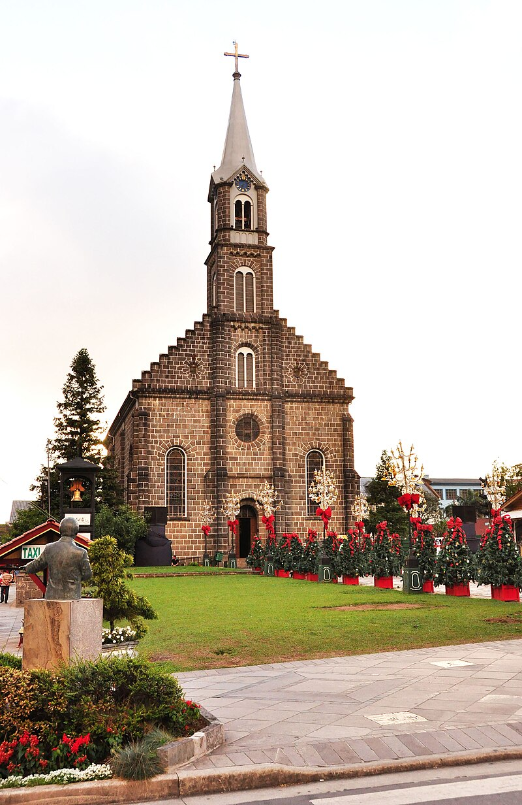
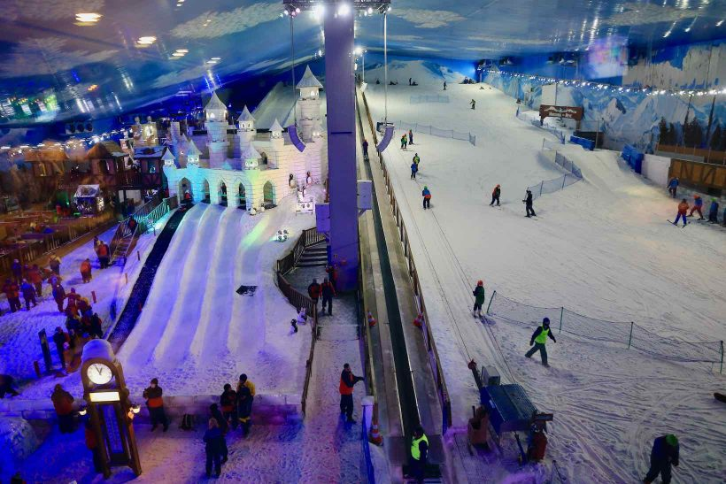

-
Mini Mundo
O Mini Mundo é um parque a céu aberto que tem réplicas de
construções do mundo 24 vezes menores do que as construções
originais. O parque começou como uma distração e hoje é um dos
lugares mais visitados da cidade, com diversos cenários curiosos do
nosso cotidiano. Por lá você encontrará uma réplica da Usina do
Gasômetro (Porto Alegre), o Neuschwanstein Castle (Alemanha), Museu
do Ipiranga (São Paulo), Aeroporto de Bariloche (Argentina) e muito
mais!

-
Igreja São Pedro
Localizada na Av. Borges de Medeiros, a Igreja Matriz São Pedro foi
construída a partir de 1917 e grande parte de sua estrutura é de
pedra. A igreja tem vários vitrais e sua torre possui 44 metros de
altura. Ao seu lado fica a a Fonte do Amor Eterno, uma fonte onde
casais apaixonados deixam um cadeado com seu nome para selar seu
amor. Durante o Natal a igreja recebe uma iluminação especial e no
Réveillon a área ao redor da igreja é ideal para observar os fogos.

-
Rua Torta de Gramado
A florida Rua Emílio Sorgetz até lembra a Lombard Street em San
Francisco, na Califórnia. As curvas não são tantas quantas às da
cidade norte-americana, mas suficientes para atraírem todos os dias
dezenas de turistas em busca da foto perfeita. A Rua Torta fica no
centro de Gramado, então vale a pena uma caminhada até ela para
fazer um registro neste cartão-postal da Serra Gaúcha.

-
Snowland
A atração foi inaugurada no final de 2013 e desperta a curiosidade
de muitos viajantes porque é bastante diferente de outras atividades
pelo Brasil! O Snowland funciona como um complexo de diversões
fechado, em que o foco são atrações com neve. Ele é o primeiro
parque de neve indoor na América Latina e possui uma “Montanha de
Neve” artificial com pista para praticar esqui e snowboard, descida
de boia na neve, aluguel de moto na neve, além de um simulador 3D e
pista de patinação.
É um lugar para toda a família, mas como é preciso pagar para entrar
no complexo e outras atrações lá dentro são pagas à parte, muitas
vezes a brincadeira não sai barata. É uma excelente atração para ter
uma primeira experiência na neve ou para um dia de chuva em Gramado,
já que o parque é todo fechado. O estabelecimento oferece roupas e
calçados de frio para ficar na área da Montanha, onde faz até
temperatura negativa; recomendamos, porém, que você já vá com uma
roupa quente para não sentir frio em demasia.

-
Vinícola Ravanello
Opção para quem quer conhecer melhor o mundo dos vinhos e
degustá-los, a Vinícola Ravanello oferece uma experiência muito
interessante e informativa. A visita guiada passa por parreirais,
pela área interna onde é feito todo o processo de produção e é
finalizada em uma sala onde são degustados os rótulos da vinícola,
harmonizados com queijos.É recomendado fazer reserva para a visita!